More VivaTech visualizations
Additional chart forms from the same validated scrape: 3,153 companies, 1,133 speakers, and 355 matched speakers.
Stage-floor funnel by company type
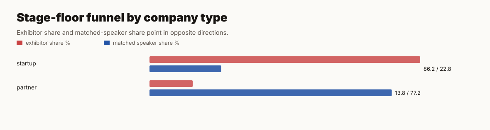
Top billing density
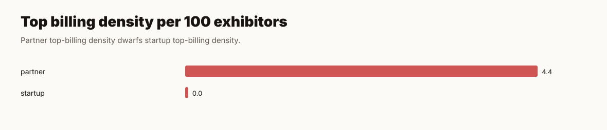
Tag stage-floor scatter
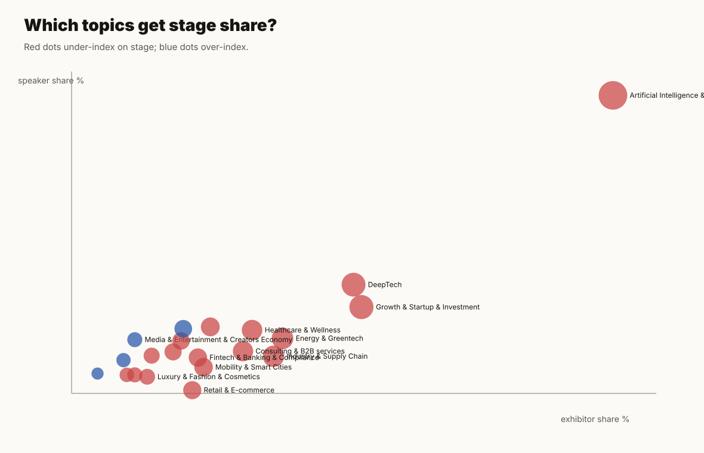
Topic under-index leaderboard
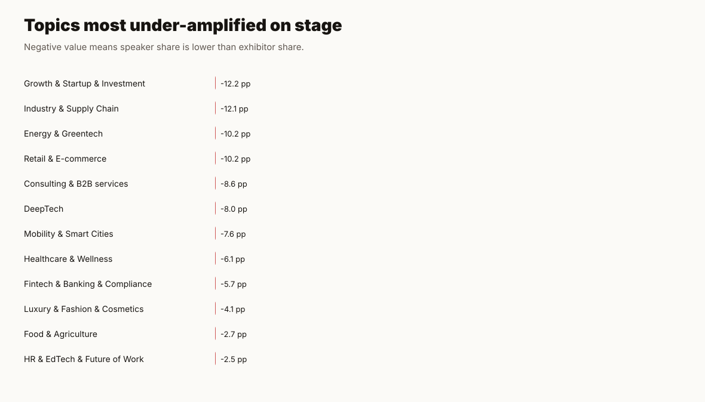
Country microphone leverage
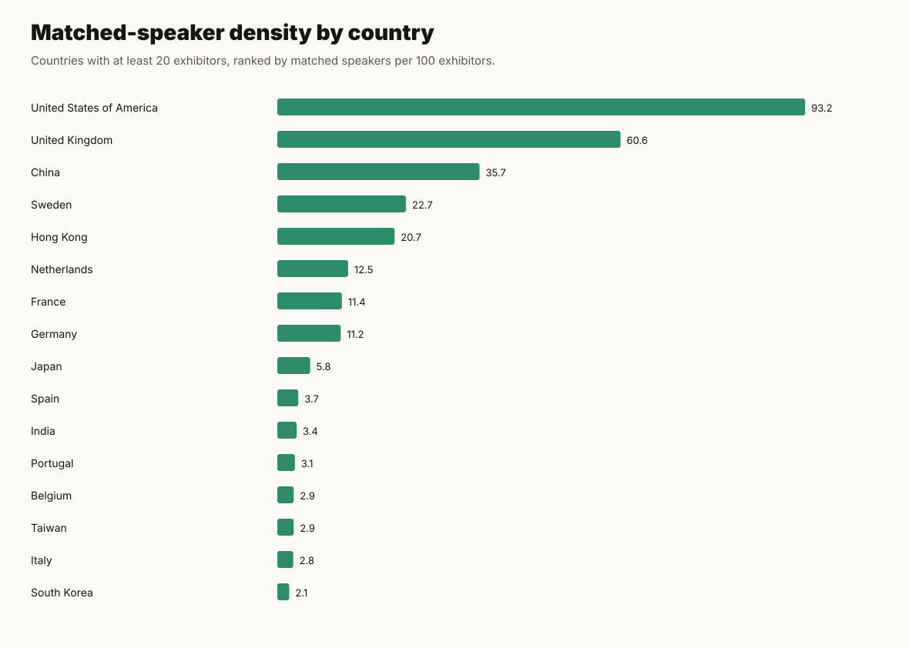
Funding maturity ladder
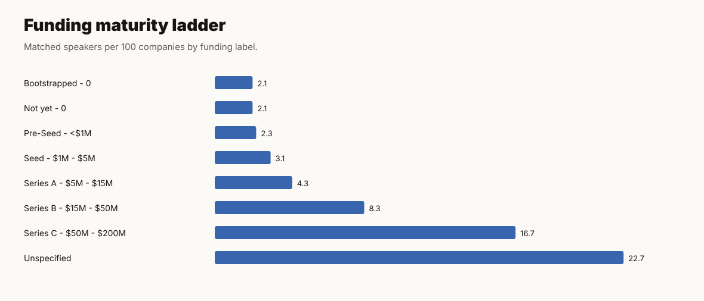
Role share vs top billing
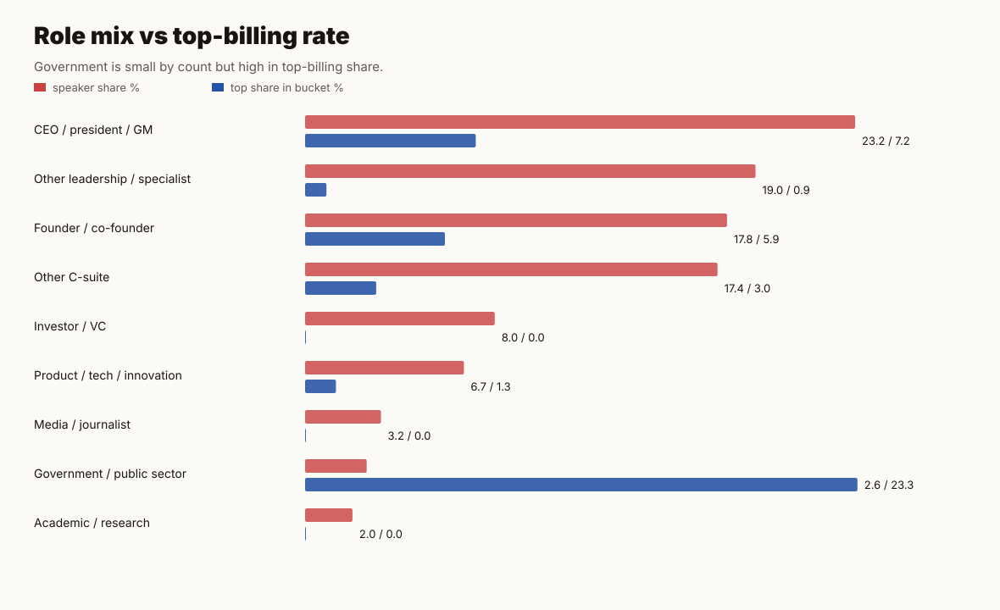
Missingness dashboard
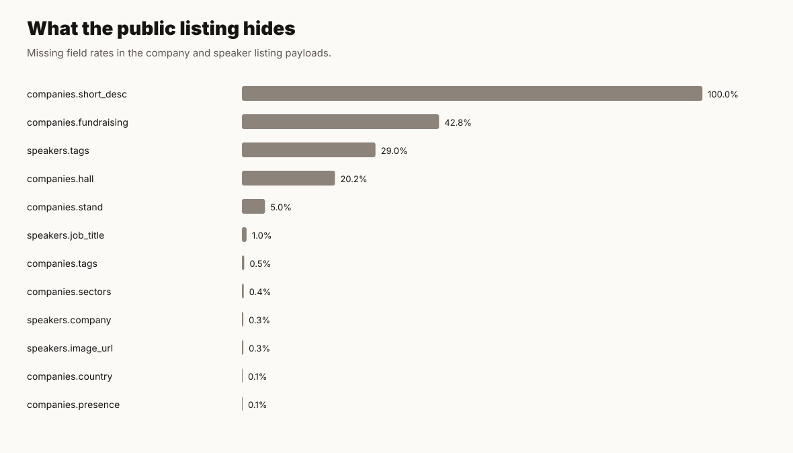
Attention inequality curve
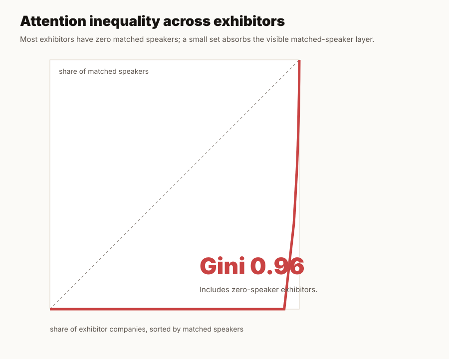
Tech for Change attention gap
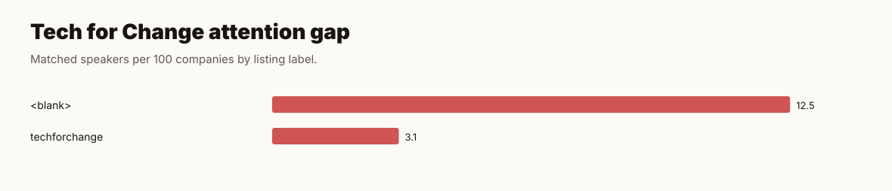
Tag pair heatmap
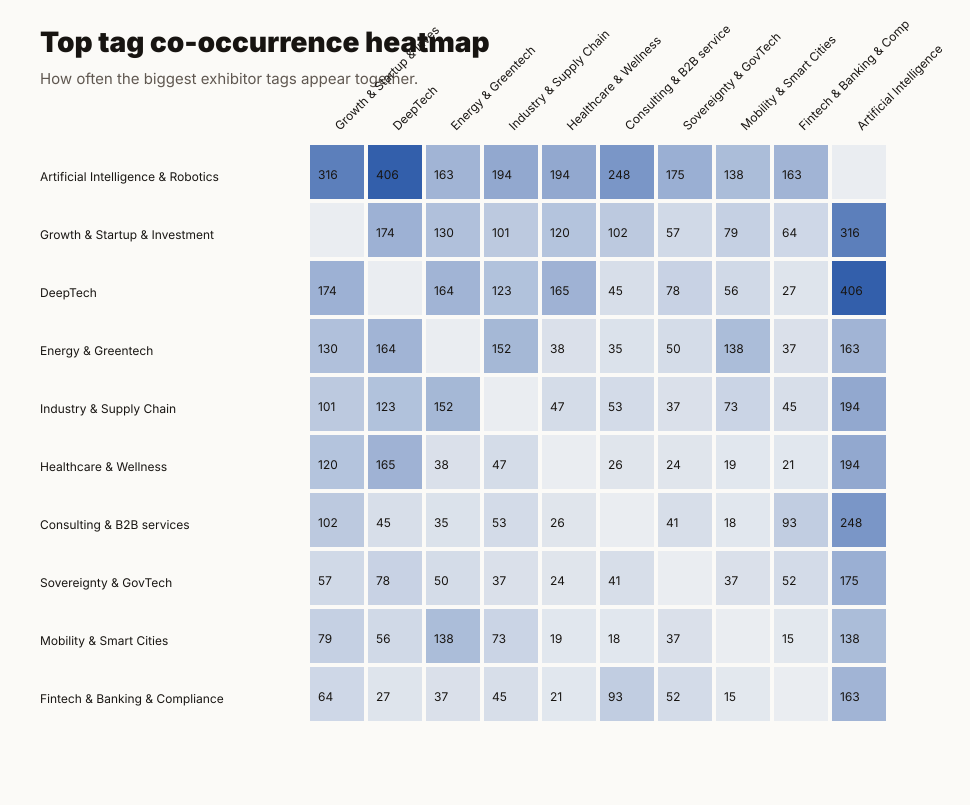
Top speaker taglessness
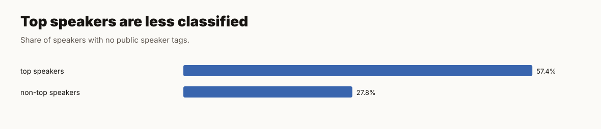